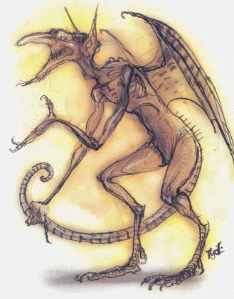

Раазофордж
Этот город окружен рвом с жидким железом и укреплениями, покрытыми остролистником. До недавнего времени он управлялся маркизом-камбионом, который брал металл изо рва и ковал оружие и материалы для близлежащих цитаделей, но поле энтропии корабля хаоса превратило город в тлеющие руины. Теперь над городом висит облако маслянистого дыма. Массивные железные ворота, охранявшие главный вход, были снесены наружу и теперь лежат жалкой кучей. Капитан корабля, бабау, приказал подняться на борт выжившим дретчам и арманитам, и город полностью опустел, если бы не несколько мефитов и убирающих мусор мейнов.
Если
корабль
все еще
находится
там, когда тут
оказываются
персонажи, то
они могут
увидеть его
парящим над
центром
города;
перейдите к
Главе
Третьей (уцелевшие
раазорфорджцы
будут лежать
ниже травы и
не
побеспокоят
героев). Если корабль
улетел, то
персонажи
могут
свободно
обыскать
покинутый
город, хотя
там нет
ничего
ценного.
Большая
часть зданий
была ветхой и
состояла из
остролистника,
оплетающего
каркасы из
железных
прутьев – да
уж, ни один
странник не
назовет это
прочным
материалом.
Почти все в
городе было
разбито,
погнуто или
вынесено, но
персонажи
все еще могут
найти
наковальни
всевозможных
размеров,
незаконченное
оружие и
груды
чугунных
слитков.
Мефиты:
Камбион
использовал
большие
количества
огненных и
магмовых
мефитов
чтобы
переносить
сообщения и
помогать
обрабатывать
металлы.
Теперь
выжившие
огненные
мефиты
вообразили
себя новыми
правителями
Раазорфорджа.
Дюжина из них
обрушивается
на героев,
требуя
подачки. Если
герои
отказывают,
то мефиты
обрушивают
на них свое
разящее
дыхание,
магические
снаряды и
силы,
связанные с
нагреванием
металла. Если
РС дают
взятку, то они
могут узнать,
что
случилось с
городом, и в
каком
направлении
отправился корабль
хаоса.
Огненные
мефиты
(12): THACO
17; #AT 2; Dmg
ld3+l/ld3+l; AC
5; HD 3+1; hp
10; MV 12 Fl 24(B);
SA
разящее
дыхание три
раза в день,
жар, могут
попытаться
призвать 1-2
огненных
мефитов с 25%
вероятность
успеха, магический
снаряд (2
снаряда) и нагревание
металла раз
в день; SD
регенерация; SZ
Средний (5
футов высоты);
Int
Средний; AL
Нейтральное; ML
8; XP 420.
Мейны:
Эти демоны
служили в
городе в
качестве
источника
продовольствия
и низко-квалифицированной
рабочей силы.
Большая их
часть была
убита, но
некоторые
выжили,
сбежав из
зданий, где
они были
заключены, и
теперь
бродят по
улицам в
поисках еды.
Группа из 5d10
мейнов
думает, что
персонажи
будут
хорошей едой.
Мейны (5d10): THACO
20; #AT 3; Dmg ld2/ld2/ld4;
AC 8; HD 1; hp
4; MV 6; SA
кислотный
пар; MR
10%; SZ
Маленький (3
фута высоты); Int
Полуинтеллектуальные;
AL
Хаотично-Злое;
ML
Нет; XP
975.
Дретчи:
Эти существа
выполняли
всю работу,
которая не
могла быть
поручена
мефитам и
мейнам.
Группа из
восьми
дретчей
планирует
остаться в
городе, пока
не
закончится
продовольствие,
а затем
отправиться
странствовать
по равнинам.
Они не
заинтересованы
в сокровищах,
но скажут все,
что знают о корабле
хаоса (их
знания не
распространяются
за пределы
того, как он
выглядит, а
так же когда и
в какую
сторону он
улетел) если
герои
предложат им
еду. Когда
дретчи
получат
желаемое, они
кусают РС и
телепортируются
в безопасное
место.
Дретчи (8): THACO 19; #AT 3; Dmg ld4/ld4/ld4+l; AC 4; MV 9; MR 10%; SZ Маленький (3-4 фута высоты); Int Низкий; AL Хаотично-Злое; HD 2; hp 9; ML 11; XP 1,400.
Заклинательные
способности (2й
уровень):
Раз в раунд: паника
(scare),
телекинез (telekinesis); Раз
в день: вонючее
облако (stinking cloud).
Плохие
Земли
Эти
области
разрушенных
земель
пронизаны
пригорками,
оврагами,
маленькими
пещерами и
узкими
расщелинами.
Продвижение
затруднено и
движение
героев
замедляется
так, если бы
они
проходили
через низкие
горы (см. DMG
таблицу 74).
Большая
часть
склонов
заросла
остролистником.
Все
отчаянные
охотники и
животные,
питающиеся
падалью,
лежат в
ожидании их
следующей
пищи.
Практически
все может
выпрыгнуть
откуда-то или
примчаться
из укрытия и
напасть на
путников.
Змеиное
Дерево:
THACO
11; #AT
9; Dmg 2d6 за каждый
удар; AC
7; HD
9; hp
42; MV
0; SA яд,
отделяющиеся
ветви; SD
иммунитет к
холоду, яду,
кислоте и
заклинаниям,
которые
воздействуют
на одно
отдельное
существо,
половнный
урон от
дробящего
оружия,
двойной урон
от огня; SZ
Огромный (50
футов высоты);
Int
Полуинтеллектуальное;
AL
Хаотично-Злое;
ML
12; XP 7,000.
Варрангоины:
Две дюжины
варрангоинов
живут в
маленькой
пещере со
входами,
находящимися
прямо под
ногами у
партии.
Варрангоины
могут
услышать и
почувствовать
шаги
персонажей
за несколько
сотен ярдов и
устроить на
них засаду.
Варрангоины
Второго Типа
(24):
THACO 15; #AT
3; Dmg ld4/ld4/ld6;
AC 0; HD 5+5; hp
28; MV 3 Fl
18(C); SA выдыхают
облако огня с
30-футовым
диаметром,
дальность 30
ярдов (три
раза в день); SD
иммунитет к
огню,
половинный
урон от
кислоты; SZ
Средний (4-5
футов высоты);
Int
Очень
Интеллектуальные;
AL
Хаотично-Злое;
ML 17; XP
2,000.
Бодак:
Персонажи
могут
столкнуться
лицом к лицу с
бодаком,
когда они
поднимаются
или обходят
вершину.
Бодак: THACO
11; Dmg в
зависимости
от оружия (если
оно есть); AC
5; HD 9+9; hp
50; MV 6; SA
смертоносный
взгляд; SD уязвим
только для
холодного
или
магического
оружия,
иммунитет к
яду, а так же
заклинаниям
очарования,
удержания,
сна и замедления;
SZ
Средний (6
футов высоты);
Int
Низкий; AL
Хаотично-Злое;
ML 11; XP
5,000.
Охотник: Арканалот и группа из 12 гончих йет, взятых взаймы у лорда танар’ри, охотятся на паразитов (солнечный свет плана не беспокоит гончих). Арканалот спускает гончих до того, как персонажи увидят каких-либо противников. Арканалот поддерживает атакующих псов заклинаниями (он не вступает в ближнюю схватку без необходимости). Гончие бьются до смерти, тогда как арканалот дерется до тех пор, пока все собаки не будут убиты, после чего телепортируется прочь.
Первое
атакующее
заклинание,
направленное
на
арканалота,
привлекает
внимание
лорда танар’ри,
который
спонсировал
охоту.
Заклинатель-оскорбитель
обрастает
болезненными
мозолями,
которые
уменьшают
Ловкость и
Телосложение
на 2 пункта и
увеличивают
время
произнесения
заклинаний
на 2 раунда.
Несчастный
будет
находиться в
этом
состоянии до
тех пор, пока
не него не
будет
наложено
заклинание лечения
болезни (cure
disease). Обычные
средства не
могут помочь
ему.
Арканолот: THACO 9; #AT 3; Dmg ld4/ld4/2d6; AC -8; HD 12+24; hp 88; MV 12, Fl 18(B); SA яд, заклинания, заклинательные способности; SD иммунитет к огню, кислоте, яду и заклинаниям, воздействующим на разум, половинный урон от газа, двойной урон от холода, уязвим только для оружия +3 или лучшего; MR 60%; SZ Средний (6 футов высоты); Int Сверхгениальный; AL Нейтрально-Злое; ML 16; XP 20,000.
Заклинательные способности (12й уровень): Раз в раунд: самоизменение (alter self), оживление мертвецов (animate dead), вызов болезни (cause disease), очарование человека (charm person), продолжительная тьма (continual darkness), управление температурой в радиусе 70 футов (control temperature 70' radius), полет (fly), нагревание металла (heat metal), улучшенная фантасмагория (improved phantasmal force), невидимость (invisibility), магический снаряд (magic missile), создание огня (produce flame), изменение облика (в гуманоидную) (shape change (to humanoid form)), телекинез (telekinesis), безошибочная телепортация (teleport without error); Раз в день: страх.
Врата (раз в день): ld6 меззолотов или один арканалот (40%).
Имеющиеся
заклинания: 1й
уровень: пылающие
руки (burning hands), цветные
брызги (color
spray),
смазка (grease),
сон (sleep); 2й
уровень: обнаружение
невидимости (detect
invisibility),
кислотная
стрела
Мельфа (Melfs
acid
arrow), луч
ослабления (ray
of enfeeblement),
паутина (web);
3й уровень: рассеивание
магии (dispel
magic),
огненный шар (fireball),
замедление (slow),
совет (suggestion); 4й
уровень: инфекция (contagion),
ослабление
(enervation),
улучшенная
невидимость (improved
invisibility),
стена огня (wall of
fire);
5й уровень: слабоумие
(feeblemind),
удержание
монстра (hold
monster), теневая
дверь (shadow
door), стена
силы (wall
of force); 6й
уровень: дезинтеграция
(disintegrate).
Гончая Йет (12): THACO 17; Dmg 2d4; AC 0; HD 3+3; hp 18; MV 15, Fl 27(B); SA лай заставляет всех существ, находящихся в радиусе 90 футов сделать спас-бросок против заклинаний или убежать в панике; SD уязвимы только для серебряного или магического оружия; MR 10%; SZ Средний (4 фута высоты); Int Очень интеллектуальные; AL Нейтрально-Злое; ML Нет; XP 13,000.
| Предыдущая Следующая | Оглавление Обложка |